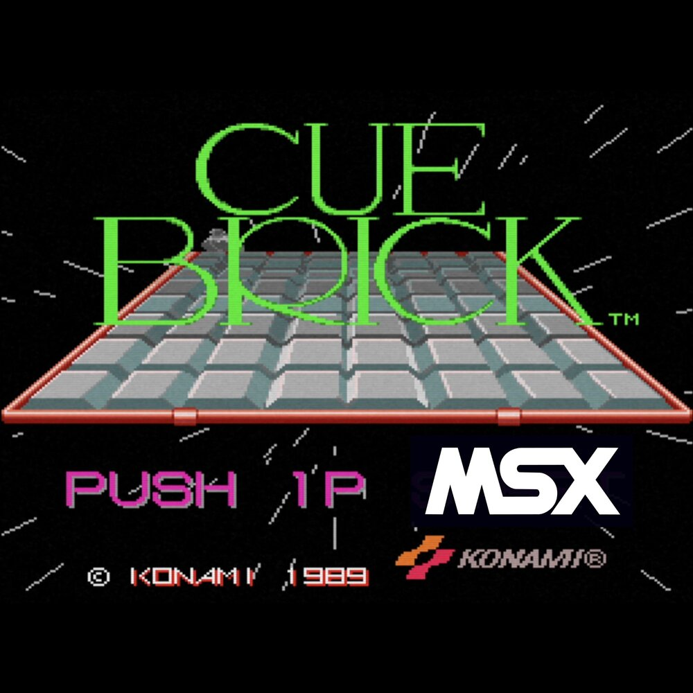
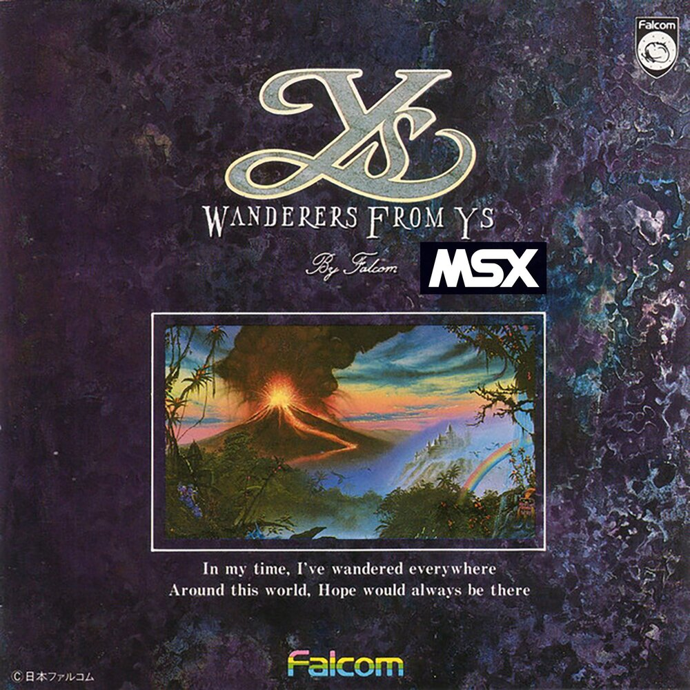
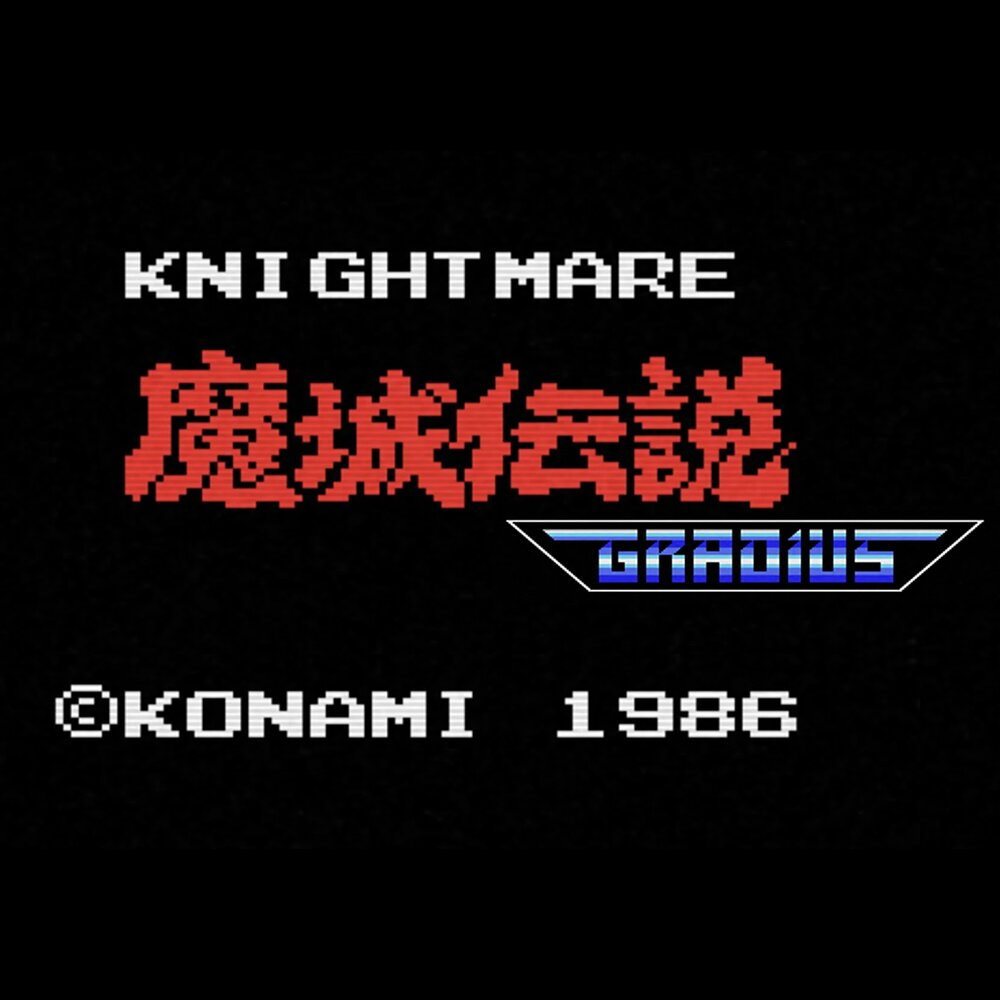
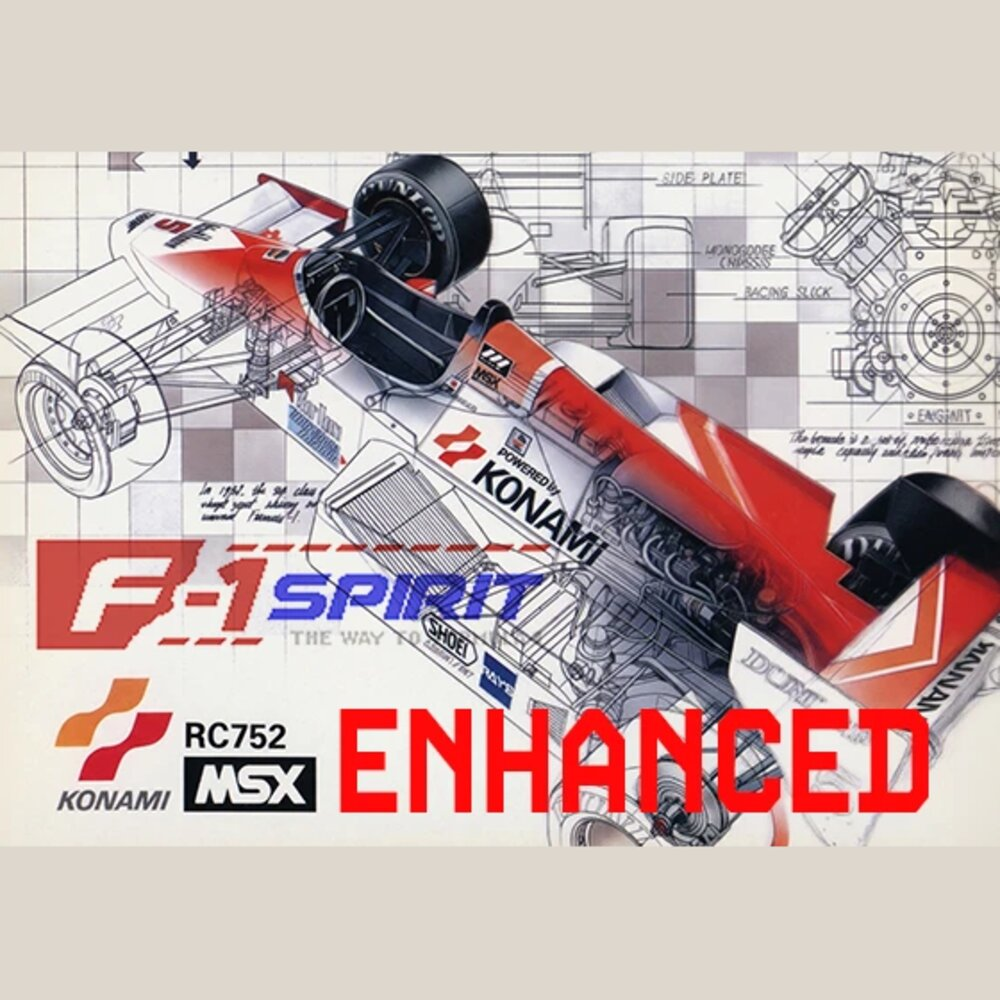

GAMES
-

CUE BRICK
MSX2 · MSX-MUSIC · Original © 1989 KONAMI
-

YS III HDD ENHANCED (beta ver)
MSX2 · MSX-DOS2 HDD · Original © 1989 Nihon Falcom
-

KNIGHTMARE × GRADIUS
MSX · Cartridge Combination Enhanced · Original © 1986 KONAMI
-

F-1 SPIRIT ENHANCED
MSX · The Way to Formula-1 · Original © 1987 KONAMI